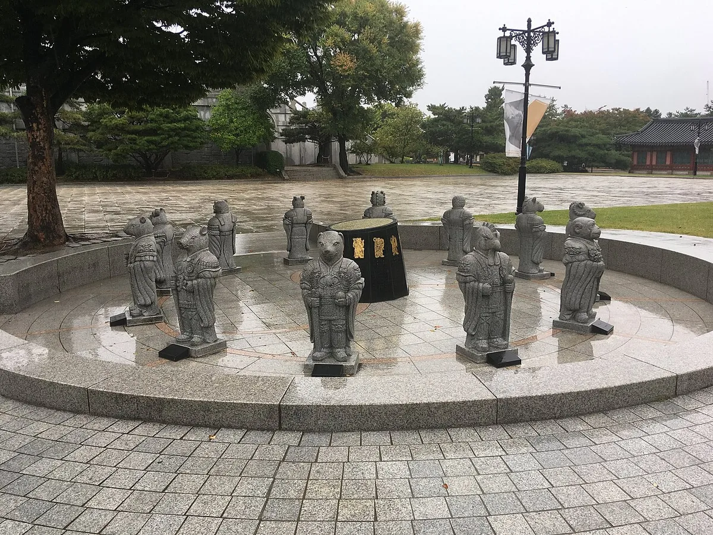
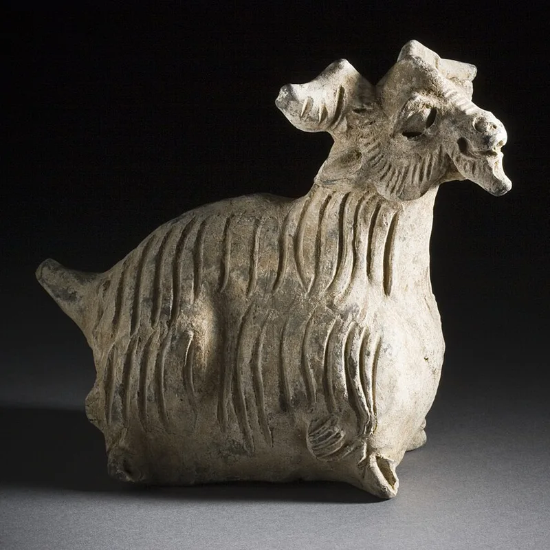
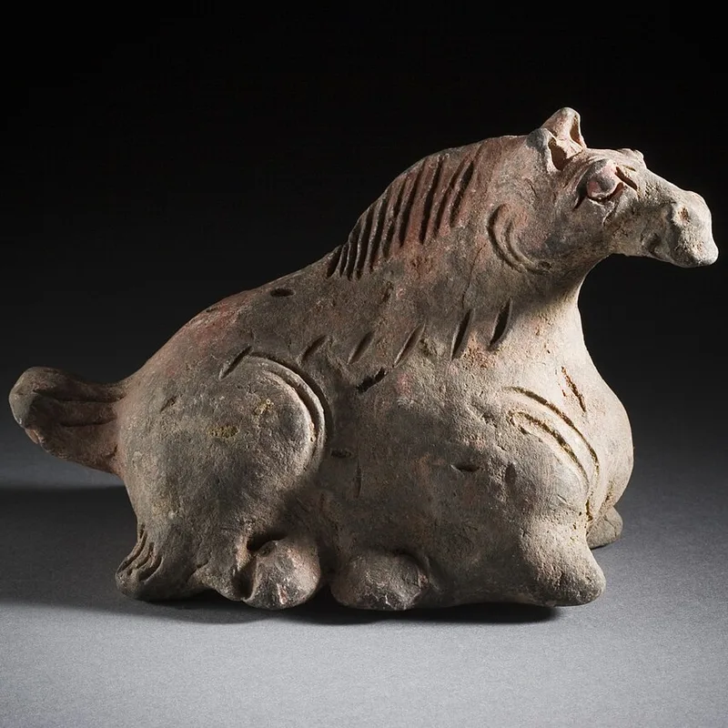
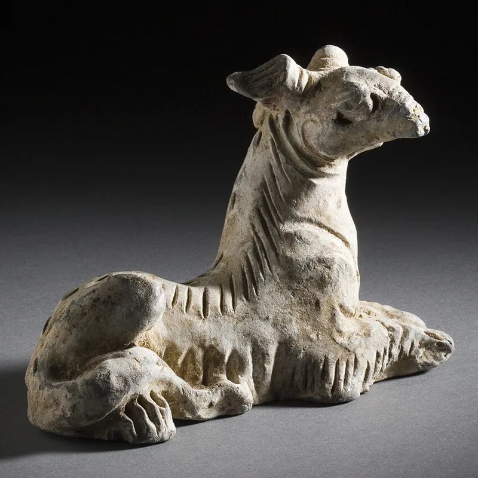
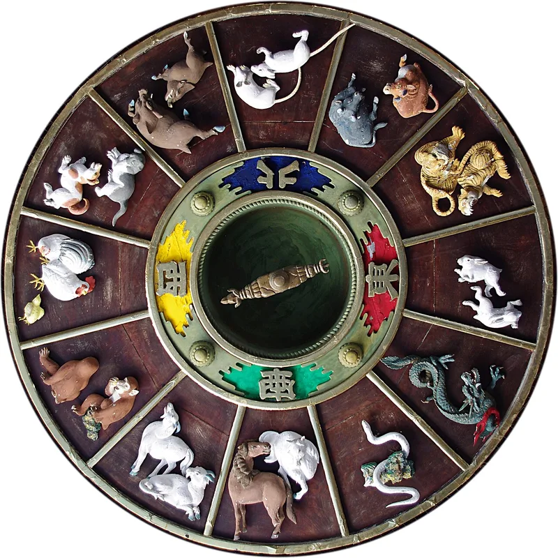

Zodiac and Work
Best Careers for Each Chinese Zodiac Sign
In Chinese tradition, the animal of your birth year is said to colour how you work as well as how you live. Here are the careers our zodiac guides link with each of the twelve signs, the traits behind them, and how to use them sensibly.

Why the zodiac talks about careers
The Chinese zodiac gives each year in a twelve-year cycle its own animal, and Chinese folk tradition holds that a person's character is related to the attributes of their birth animal. As Wikipedia's article on the Chinese zodiac puts it, the animals are believed to influence people's personalities, careers, compatibility, marriages and fortunes.
Career suggestions follow from those traits. A sign described as patient and steady is matched with work that rewards patience; a sign described as quick and sociable, with work that rewards speed and people skills. The lists below are the ones used in our guide to what your zodiac sign says about you and in each animal's guide.
Read them as traditional associations, shared for fun and reflection. They describe tendencies people have linked with each animal, not a test of anyone's abilities. The animals themselves have a long history in Chinese art: the earthenware figures below come from a set of twelve zodiac animals made for a tomb during the Yuan dynasty (1279–1368).



Careers for all 12 signs at a glance
The table lists the four careers our guides give for each sign, with the traits they come from. Select a sign to read its full guide.
| Sign | Traditional careers | Traits behind them |
|---|---|---|
| Rat | Business, writing, research, trading | Quick-witted, resourceful and sociable |
| Ox | Agriculture, engineering, finance, medicine | Reliable, honest and hard-working |
| Tiger | Entrepreneurship, sports, law, management | Brave, confident and competitive |
| Rabbit | Diplomacy, counseling, design, hospitality | Gentle, thoughtful and diplomatic |
| Dragon | Leadership, entrepreneurship, entertainment, real estate | Confident, charismatic and ambitious |
| Snake | Finance, research, psychology, strategy | Wise, intuitive and elegant |
| Horse | Travel, sales, sports, media | Energetic, independent and adventurous |
| Goat | Art, design, counseling, nonprofit work | Gentle, creative and compassionate |
| Monkey | Technology, marketing, comedy, consulting | Clever, curious and witty |
| Rooster | Accounting, journalism, quality control, public speaking | Observant, hard-working and confident |
| Dog | Law, security, social work, education | Loyal, honest and protective |
| Pig | Hospitality, food industry, teaching, healthcare | Warm-hearted, generous and easygoing |
The sections below group the signs into the four traditional triangles, sets of three animals that tradition sees as sharing a similar pace. The nicknames for the groups are our own summary.
Rat, Dragon and Monkey: the quick-starters
Rat: business, writing, research, trading. Quick-witted, resourceful and sociable, Rats notice opportunities others miss, so fast-moving roles that reward spotting trends early suit them. The watch-out: repetitive, slow work can leave a quick mind restless.
Dragon: leadership, entrepreneurship, entertainment, real estate. Confident, charismatic and ambitious, Dragons are often handed the lead, and roles with real authority and a big stage are said to bring out their best. The watch-out: high standards can come across as impatience.
Monkey: technology, marketing, comedy, consulting. Clever, curious and witty, Monkeys are quick learners who enjoy solving problems creatively, so fast, idea-driven work suits them. The watch-out: interest can fade once only the follow-through remains.
Ox, Snake and Rooster: the planners
Ox: agriculture, engineering, finance, medicine. Reliable, honest and hard-working, Oxen build success slowly through persistence, so work that rewards patience and long-term effort is said to suit them. The watch-out: sudden change and chaotic workplaces.
Snake: finance, research, psychology, strategy. Wise, intuitive and elegant, Snakes plan carefully before acting, and their traditional fields reward careful analysis over quick reactions. The watch-out: overthinking a decision that was fine the first time.
Rooster: accounting, journalism, quality control, public speaking. Observant, hard-working and confident, Roosters have an eye for detail and are the colleague trusted to catch a mistake before it goes out. The watch-out: pointing out every flaw can upset colleagues.
Tiger, Horse and Dog: the idealists
Tiger: entrepreneurship, sports, law, management. Brave, confident and competitive, Tigers are natural leaders said to thrive when they start something new or lead a team through a crisis. The watch-out: impatience with long approval chains and slower colleagues.
Horse: travel, sales, sports, media. Energetic, independent and adventurous, Horses suit roles with movement, variety and visible results better than a fixed routine. The watch-out: long, slow projects test their patience.
Dog: law, security, social work, education. Loyal, honest and protective, Dogs stand up for what they believe in, so fields built around fairness, protection or service fit them. The watch-out: workplaces where office politics matter more than doing the right thing.
Rabbit, Goat and Pig: the peacemakers
Rabbit: diplomacy, counseling, design, hospitality. Gentle, thoughtful and diplomatic, Rabbits value harmony, and roles that reward tact, patience and an eye for detail suit them. The watch-out: avoiding a difficult conversation that needs to happen.
Goat: art, design, counseling, nonprofit work. Gentle, creative and compassionate, Goats are said to do best in creative or people-centred work, in supportive, low-conflict teams. The watch-out: cutthroat, highly competitive workplaces.
Pig: hospitality, food industry, teaching, healthcare. Warm-hearted, generous and easygoing, Pigs suit work built around hospitality, care or service. The watch-out: being slow to push back on unfair workloads or bad deals.
What research says about signs and success
Does your birth animal really shape your working life? Researchers Naci Mocan and Han Yu studied one case: children born in Dragon years, a sign tradition links with good fortune. In a 2017 working paper for the National Bureau of Economic Research, they reported that Dragon-year children in China were 14 percent more likely to earn a bachelor's degree or higher than children born under the other eleven signs, and scored higher on college entrance exams and middle school tests.
The sign itself was not the reason. The researchers found that the parents of Dragon-year children had consistently higher expectations for them and invested more time, money and effort in them. They concluded that the belief in success, and the investment that followed it, became self-fulfilling. What made the difference was what people did, not the year on the calendar.
Use your sign as a prompt, not a plan
Traditional career lists are fun to read, but they are not career advice. Real career choices should follow your skills, interests and values, and the opportunities open to you: the subjects you enjoy, the work you are good at, the training you can get and the jobs that exist where you live.
Where the zodiac can help is as a mirror. Read your sign's traits and ask yourself a few questions:
- Which of these traits do I recognise in myself, and which do not fit me at all?
- When have I felt most absorbed at school or at work?
- Does the watch-out for my sign describe a habit I would like to work on?
- Which careers on other signs' lists interest me more than my own?
Two people born in the same year can be very different, and a Goat can make a fine accountant just as a Rooster can be a gifted artist. Find your sign and element with our zodiac sign checker, and use what you read as a starting point for your own thinking.

Frequently asked questions
What is the best career for my Chinese zodiac sign?
Our guides list four traditional careers for each sign, for example business, writing, research and trading for the Rat, or art, design, counseling and nonprofit work for the Goat. They are traditional associations: the best career for you depends on your skills, interests and opportunities.
Which zodiac sign is best for business?
Tradition links entrepreneurship with the Tiger and the Dragon, business and trading with the Rat, and finance with the Ox and the Snake. Any sign can do well in business: these are traditional associations, not rules.
Is there evidence that zodiac signs affect careers?
One study found that Dragon-year children in China did better at school, but the researchers traced the difference to their parents' higher expectations and investment, not to the sign itself.
Should I choose a job based on my zodiac sign?
No. Use your sign as a prompt for reflection, and choose work based on your skills, interests, values and the opportunities available to you.
Sources and further reading
- Wikipedia: “Chinese zodiac” — the twelve animals in order, the folk belief that personality is related to the birth animal, and the belief that the animals influence personalities, careers, compatibility, marriages and fortunes.
- NBER Digest: “Explaining the Good Fortune of Dragon Year Children” (November 2017) — Dragon-year children in China were 14 percent more likely to earn a bachelor's degree or higher and scored higher on entrance exams and middle school tests; their parents had higher expectations and invested more time, money and effort.
- Naci H. Mocan and Han Yu: “Can Superstition Create a Self-Fulfilling Prophecy? School Outcomes of Dragon Children of China”, NBER Working Paper 23709 (August 2017) — the working paper itself: the gap in school outcomes disappears once parents' expectations are taken into account, and the belief in success and the investment that follows become self-fulfilling.
- MyBirthSign: “What Your Chinese Zodiac Sign Says About Your Personality” — each sign's traditional traits and careers as used across this site, and the four traditional triangles with our nicknames for them.
Career associations are a traditional Chinese zodiac reading for culture and entertainment, not career advice or a scientific test, and the photos are from Wikimedia Commons under the licences named under each picture.
Explore more: What your zodiac sign says · Year of the Rat · Year of the Goat · Lucky days for opening a business
← Back to the MyBirthSign Blogរាសី និងការងារ
មុខរបរល្អបំផុតសម្រាប់រាសីចិននីមួយៗ
ក្នុងប្រពៃណីចិន សត្វនៃឆ្នាំកំណើតរបស់អ្នក ត្រូវបានគេនិយាយថា ជះឥទ្ធិពលលើរបៀបដែលអ្នកធ្វើការ ដូចគ្នានឹងរបៀបដែលអ្នករស់នៅដែរ។ ខាងក្រោមនេះ ជាមុខរបរដែលមគ្គុទ្ទេសក៍រាសីរបស់យើង ភ្ជាប់ជាមួយរាសីនីមួយៗក្នុងចំណោមរាសីទាំងដប់ពីរ លក្ខណៈដែលនៅពីក្រោយ និងរបៀបប្រើវាឱ្យសមហេតុផល។
ហេតុអ្វីរាសីនិយាយអំពីមុខរបរ
រាសីចិន ផ្ដល់សត្វមួយរៀងៗខ្លួនដល់ឆ្នាំនីមួយៗ ក្នុងវដ្តដប់ពីរឆ្នាំ ហើយទំនៀមប្រជាប្រិយចិន ចាត់ទុកថា បុគ្គលិកលក្ខណៈរបស់មនុស្សម្នាក់ ទាក់ទងនឹងលក្ខណៈនៃសត្វកំណើតរបស់គេ។ ដូចដែលអត្ថបទរបស់ Wikipedia ស្ដីពីរាសីចិន បានសរសេរ សត្វទាំងនេះត្រូវបានគេជឿថា មានឥទ្ធិពលលើបុគ្គលិកលក្ខណៈ មុខរបរ ភាពសមស្រប អាពាហ៍ពិពាហ៍ និងវាសនារបស់មនុស្ស។
ការណែនាំអំពីមុខរបរ កើតចេញពីលក្ខណៈទាំងនោះ។ រាសីដែលត្រូវបានពិពណ៌នាថា អត់ធ្មត់ និងនឹងនរ ត្រូវបានផ្គូផ្គងជាមួយការងារដែលផ្ដល់ផលដល់ការអត់ធ្មត់ ចំណែករាសីដែលត្រូវបានពិពណ៌នាថា រហ័សរហួន និងចូលចិត្តសេពគប់ ត្រូវបានផ្គូផ្គងជាមួយការងារដែលផ្ដល់ផលដល់ល្បឿន និងជំនាញទំនាក់ទំនងជាមួយមនុស្ស។ បញ្ជីខាងក្រោម ជាបញ្ជីដែលប្រើក្នុងមគ្គុទ្ទេសក៍របស់យើងស្ដីពីអ្វីដែលរាសីរបស់អ្នកប្រាប់អំពីអ្នក និងក្នុងមគ្គុទ្ទេសក៍របស់សត្វរាសីនីមួយៗ។
សូមអានវាជាការភ្ជាប់ទំនាក់ទំនងតាមប្រពៃណី ដែលចែករំលែកសម្រាប់ការកម្សាន្ត និងការពិចារណា។ វាពិពណ៌នាអំពីទំនោរដែលមនុស្សបានភ្ជាប់ជាមួយសត្វនីមួយៗ មិនមែនជាការវាស់សមត្ថភាពរបស់នរណាម្នាក់ទេ។ សត្វរាសីទាំងនេះផ្ទាល់ មានប្រវត្តិយូរលង់ក្នុងសិល្បៈចិន៖ រូបចម្លាក់ដីដុតខាងក្រោម មកពីឈុតសត្វរាសីដប់ពីរ ដែលគេធ្វើសម្រាប់ផ្នូរមួយ ក្នុងរជ្ជកាលរាជវង្ស Yuan (1279–1368)។
មុខរបរសម្រាប់រាសីទាំង 12 ក្នុងមួយភ្លែត
តារាងនេះរាយមុខរបរបួន ដែលមគ្គុទ្ទេសក៍របស់យើងផ្ដល់ឱ្យរាសីនីមួយៗ រួមជាមួយលក្ខណៈដែលមុខរបរទាំងនោះកើតចេញមក។ សូមចុចលើរាសីមួយ ដើម្បីអានមគ្គុទ្ទេសក៍ពេញលេញរបស់វា។
| រាសី | មុខរបរតាមប្រពៃណី | លក្ខណៈនៅពីក្រោយ |
|---|---|---|
| ជូត | អាជីវកម្ម ការសរសេរ ការស្រាវជ្រាវ ការជួញដូរ | ឆ្លាតវៃ ប៉ិនប្រសប់ និងចូលចិត្តសេពគប់ |
| ឆ្លូវ | កសិកម្ម វិស្វកម្ម ហិរញ្ញវត្ថុ វេជ្ជសាស្ត្រ | ទុកចិត្តបាន ស្មោះត្រង់ និងឧស្សាហ៍ព្យាយាម |
| ខាល | ការបង្កើតអាជីវកម្ម កីឡា នីតិសាស្ត្រ ការគ្រប់គ្រង | ក្លាហាន ជឿជាក់លើខ្លួនឯង និងចូលចិត្តប្រកួតប្រជែង |
| ថោះ | ការទូត ការផ្ដល់ប្រឹក្សា ការរចនា សេវាកម្មបដិសណ្ឋារកិច្ច | សុភាពរាបសា គិតដល់អ្នកដទៃ និងចេះសម្របសម្រួល |
| រោង | ភាពជាអ្នកដឹកនាំ ការបង្កើតអាជីវកម្ម ការកម្សាន្ត អចលនទ្រព្យ | ជឿជាក់លើខ្លួនឯង មានមន្តស្នេហ៍ និងមានមហិច្ឆតា |
| ម្សាញ់ | ហិរញ្ញវត្ថុ ការស្រាវជ្រាវ ចិត្តវិទ្យា យុទ្ធសាស្ត្រ | ឈ្លាសវៃ មានវិចារណញាណ និងថ្លៃថ្នូរ |
| មមី | ការធ្វើដំណើរ ការលក់ កីឡា ប្រព័ន្ធផ្សព្វផ្សាយ | ពោរពេញដោយថាមពល ឯករាជ្យ និងចូលចិត្តផ្សងព្រេង |
| មមែ | សិល្បៈ ការរចនា ការផ្ដល់ប្រឹក្សា ការងារអង្គការមិនរកប្រាក់ចំណេញ | សុភាពរាបសា ច្នៃប្រឌិត និងមានចិត្តអាណិតអាសូរ |
| វក | បច្ចេកវិទ្យា ទីផ្សារ សិល្បៈកំប្លែង ការងារទីប្រឹក្សា | ឆ្លាតវៃ ចង់ដឹងចង់ឃើញ និងកំប្លែង |
| រកា | គណនេយ្យ សារព័ត៌មាន ការត្រួតពិនិត្យគុណភាព ការនិយាយជាសាធារណៈ | ចេះសង្កេត ឧស្សាហ៍ព្យាយាម និងជឿជាក់លើខ្លួនឯង |
| ច | នីតិសាស្ត្រ សន្តិសុខ ការងារសង្គម ការអប់រំ | ស្មោះស្ម័គ្រ ទៀងត្រង់ និងចេះការពារអ្នកដទៃ |
| កុរ | សេវាកម្មបដិសណ្ឋារកិច្ច ឧស្សាហកម្មម្ហូបអាហារ ការបង្រៀន សេវាថែទាំសុខភាព | មានចិត្តកក់ក្ដៅ សប្បុរស និងងាយចុះសម្រុង |
ផ្នែកខាងក្រោម ចាត់ក្រុមរាសីទៅតាមត្រីកោណប្រពៃណីទាំងបួន ពោលគឺក្រុមសត្វបីៗ ដែលប្រពៃណីចាត់ទុកថា មានល្បឿនស្រដៀងគ្នា។ ឈ្មោះហៅក្រៅរបស់ក្រុមនីមួយៗ ជាការសង្ខេបរបស់យើងផ្ទាល់។
ជូត រោង និងវក៖ ក្រុមចាប់ផ្ដើមរហ័ស
ជូត៖ អាជីវកម្ម ការសរសេរ ការស្រាវជ្រាវ ការជួញដូរ។ ដោយឆ្លាតវៃ ប៉ិនប្រសប់ និងចូលចិត្តសេពគប់ ជូតមើលឃើញឱកាសដែលអ្នកដទៃមើលរំលង ដូច្នេះតួនាទីដែលផ្លាស់ប្ដូររហ័ស និងផ្ដល់ផលដល់ការសម្គាល់ទំនោរមុនគេ សាកសមនឹងពួកគេ។ ចំណុចគួរប្រយ័ត្ន៖ ការងារដដែលៗ និងយឺត អាចធ្វើឱ្យគំនិតរហ័សរបស់ពួកគេអន្ទះសារ។
រោង៖ ភាពជាអ្នកដឹកនាំ ការបង្កើតអាជីវកម្ម ការកម្សាន្ត អចលនទ្រព្យ។ ដោយជឿជាក់លើខ្លួនឯង មានមន្តស្នេហ៍ និងមានមហិច្ឆតា រោងច្រើនតែត្រូវបានគេប្រគល់តួនាទីដឹកនាំ ហើយតួនាទីដែលមានអំណាចពិតប្រាកដ និងឆាកធំ ត្រូវបានគេនិយាយថា បង្ហាញចំណុចល្អបំផុតរបស់ពួកគេ។ ចំណុចគួរប្រយ័ត្ន៖ ស្តង់ដារខ្ពស់ អាចមើលទៅដូចជាការមិនចេះអត់ធ្មត់។
វក៖ បច្ចេកវិទ្យា ទីផ្សារ សិល្បៈកំប្លែង ការងារទីប្រឹក្សា។ ដោយឆ្លាតវៃ ចង់ដឹងចង់ឃើញ និងកំប្លែង វករៀនបានរហ័ស និងចូលចិត្តដោះស្រាយបញ្ហាប្រកបដោយភាពច្នៃប្រឌិត ដូច្នេះការងារលឿន ដែលពឹងលើគំនិតថ្មីៗ សាកសមនឹងពួកគេ។ ចំណុចគួរប្រយ័ត្ន៖ ចំណាប់អារម្មណ៍អាចរសាត់បាត់ នៅពេលដែលនៅសល់តែការងារបញ្ចប់គម្រោង។
ឆ្លូវ ម្សាញ់ និងរកា៖ ក្រុមអ្នករៀបផែនការ
ឆ្លូវ៖ កសិកម្ម វិស្វកម្ម ហិរញ្ញវត្ថុ វេជ្ជសាស្ត្រ។ ដោយទុកចិត្តបាន ស្មោះត្រង់ និងឧស្សាហ៍ព្យាយាម ឆ្លូវកសាងជោគជ័យបន្តិចម្ដងៗ ដោយការតស៊ូ ដូច្នេះការងារដែលផ្ដល់ផលដល់ការអត់ធ្មត់ និងការខិតខំរយៈពេលវែង ត្រូវបានគេនិយាយថា សាកសមនឹងពួកគេ។ ចំណុចគួរប្រយ័ត្ន៖ ការផ្លាស់ប្ដូរភ្លាមៗ និងកន្លែងធ្វើការដែលច្របូកច្របល់។
ម្សាញ់៖ ហិរញ្ញវត្ថុ ការស្រាវជ្រាវ ចិត្តវិទ្យា យុទ្ធសាស្ត្រ។ ដោយឈ្លាសវៃ មានវិចារណញាណ និងថ្លៃថ្នូរ ម្សាញ់រៀបផែនការដោយប្រុងប្រយ័ត្នមុននឹងធ្វើ ហើយវិស័យតាមប្រពៃណីរបស់ពួកគេ ផ្ដល់ផលដល់ការវិភាគយ៉ាងហ្មត់ចត់ ជាជាងប្រតិកម្មរហ័ស។ ចំណុចគួរប្រយ័ត្ន៖ ការគិតច្រើនពេក លើការសម្រេចចិត្តមួយ ដែលត្រឹមត្រូវតាំងពីដំបូង។
រកា៖ គណនេយ្យ សារព័ត៌មាន ការត្រួតពិនិត្យគុណភាព ការនិយាយជាសាធារណៈ។ ដោយចេះសង្កេត ឧស្សាហ៍ព្យាយាម និងជឿជាក់លើខ្លួនឯង រកាយកចិត្តទុកដាក់លើព័ត៌មានលម្អិត ហើយជាសហការីដែលគេទុកចិត្តឱ្យរកឃើញកំហុស មុនពេលការងារចេញទៅ។ ចំណុចគួរប្រយ័ត្ន៖ ការចង្អុលបង្ហាញគ្រប់កំហុស អាចធ្វើឱ្យសហការីមិនសប្បាយចិត្ត។
ខាល មមី និងច៖ ក្រុមអ្នកមានឧត្តមគតិ
ខាល៖ ការបង្កើតអាជីវកម្ម កីឡា នីតិសាស្ត្រ ការគ្រប់គ្រង។ ដោយក្លាហាន ជឿជាក់លើខ្លួនឯង និងចូលចិត្តប្រកួតប្រជែង ខាលជាអ្នកដឹកនាំធម្មជាតិ ដែលត្រូវបានគេនិយាយថា រីកចម្រើនល្អ ពេលចាប់ផ្ដើមអ្វីមួយថ្មី ឬដឹកនាំក្រុមឆ្លងកាត់វិបត្តិ។ ចំណុចគួរប្រយ័ត្ន៖ ការមិនចេះអត់ធ្មត់ ចំពោះនីតិវិធីអនុម័តដ៏វែង និងសហការីដែលធ្វើការយឺតជាង។
មមី៖ ការធ្វើដំណើរ ការលក់ កីឡា ប្រព័ន្ធផ្សព្វផ្សាយ។ ដោយពោរពេញដោយថាមពល ឯករាជ្យ និងចូលចិត្តផ្សងព្រេង មមីសាកសមនឹងតួនាទីដែលមានចលនា ភាពចម្រុះ និងលទ្ធផលដែលមើលឃើញ ជាងទម្លាប់ការងារថេរ។ ចំណុចគួរប្រយ័ត្ន៖ គម្រោងវែង និងយឺត ល្បងលការអត់ធ្មត់របស់ពួកគេ។
ច៖ នីតិសាស្ត្រ សន្តិសុខ ការងារសង្គម ការអប់រំ។ ដោយស្មោះស្ម័គ្រ ទៀងត្រង់ និងចេះការពារអ្នកដទៃ ចក្រោកឈរការពារអ្វីដែលខ្លួនជឿជាក់ ដូច្នេះវិស័យដែលផ្អែកលើយុត្តិធម៌ ការការពារ ឬការបម្រើ សាកសមនឹងពួកគេ។ ចំណុចគួរប្រយ័ត្ន៖ កន្លែងធ្វើការដែលនយោបាយក្នុងការិយាល័យ សំខាន់ជាងការធ្វើរឿងត្រឹមត្រូវ។
ថោះ មមែ និងកុរ៖ ក្រុមអ្នកផ្សះផ្សា
ថោះ៖ ការទូត ការផ្ដល់ប្រឹក្សា ការរចនា សេវាកម្មបដិសណ្ឋារកិច្ច។ ដោយសុភាពរាបសា គិតដល់អ្នកដទៃ និងចេះសម្របសម្រួល ថោះឱ្យតម្លៃលើភាពសុខដុម ហើយតួនាទីដែលផ្ដល់ផលដល់ភាពប៉ិនប្រសប់ក្នុងការនិយាយស្ដី ការអត់ធ្មត់ និងការយកចិត្តទុកដាក់លើព័ត៌មានលម្អិត សាកសមនឹងពួកគេ។ ចំណុចគួរប្រយ័ត្ន៖ ការគេចវេសពីការសន្ទនាដ៏លំបាក ដែលចាំបាច់ត្រូវតែកើតឡើង។
មមែ៖ សិល្បៈ ការរចនា ការផ្ដល់ប្រឹក្សា ការងារអង្គការមិនរកប្រាក់ចំណេញ។ ដោយសុភាពរាបសា ច្នៃប្រឌិត និងមានចិត្តអាណិតអាសូរ មមែត្រូវបានគេនិយាយថា ធ្វើការបានល្អបំផុតក្នុងការងារច្នៃប្រឌិត ឬការងារដែលផ្ដោតលើមនុស្ស ក្នុងក្រុមដែលគាំទ្រគ្នា និងមានទំនាស់តិច។ ចំណុចគួរប្រយ័ត្ន៖ កន្លែងធ្វើការដែលប្រកួតប្រជែងខ្លាំង និងគ្មានមេត្តា។
កុរ៖ សេវាកម្មបដិសណ្ឋារកិច្ច ឧស្សាហកម្មម្ហូបអាហារ ការបង្រៀន សេវាថែទាំសុខភាព។ ដោយមានចិត្តកក់ក្ដៅ សប្បុរស និងងាយចុះសម្រុង កុរសាកសមនឹងការងារដែលផ្អែកលើបដិសណ្ឋារកិច្ច ការថែទាំ ឬការបម្រើ។ ចំណុចគួរប្រយ័ត្ន៖ ការយឺតយ៉ាវក្នុងការតវ៉ា ចំពោះបន្ទុកការងារមិនយុត្តិធម៌ ឬកិច្ចព្រមព្រៀងមិនល្អ។
អ្វីដែលការស្រាវជ្រាវនិយាយ អំពីរាសី និងភាពជោគជ័យ
តើសត្វកំណើតរបស់អ្នក ពិតជាកំណត់ជីវិតការងាររបស់អ្នកមែនឬ? អ្នកស្រាវជ្រាវ Naci Mocan និង Han Yu បានសិក្សាករណីមួយ៖ កុមារដែលកើតក្នុងឆ្នាំរោង ដែលជារាសីដែលប្រពៃណីភ្ជាប់នឹងសំណាងល្អ។ ក្នុងឯកសារស្រាវជ្រាវឆ្នាំ 2017 សម្រាប់ National Bureau of Economic Research ពួកគេបានរាយការណ៍ថា កុមារកើតឆ្នាំរោងនៅប្រទេសចិន មានលទ្ធភាពច្រើនជាង 14 ភាគរយ ក្នុងការទទួលបានបរិញ្ញាបត្រ ឬខ្ពស់ជាងនេះ បើធៀបនឹងកុមារកើតក្រោមរាសីដប់មួយផ្សេងទៀត ហើយទទួលបានពិន្ទុខ្ពស់ជាង ក្នុងការប្រឡងចូលសាកលវិទ្យាល័យ និងការប្រឡងនៅអនុវិទ្យាល័យ។
សត្វរាសីខ្លួនវា មិនមែនជាមូលហេតុទេ។ អ្នកស្រាវជ្រាវបានរកឃើញថា ឪពុកម្ដាយរបស់កុមារកើតឆ្នាំរោង តែងតែមានការរំពឹងទុកខ្ពស់ជាងចំពោះកូនៗ ហើយបានវិនិយោគពេលវេលា ប្រាក់ និងការខិតខំច្រើនជាងលើពួកគេ។ ពួកគេសន្និដ្ឋានថា ជំនឿលើភាពជោគជ័យ និងការវិនិយោគដែលកើតឡើងតាមក្រោយ បានក្លាយជាការព្យាករណ៍ដែលសម្រេចដោយខ្លួនឯង។ អ្វីដែលធ្វើឱ្យមានភាពខុសគ្នា គឺអ្វីដែលមនុស្សបានធ្វើ មិនមែនឆ្នាំនៅលើប្រតិទិនទេ។
ប្រើរាសីរបស់អ្នកជាគំនិតសម្រាប់ពិចារណា មិនមែនជាផែនការ
បញ្ជីមុខរបរតាមប្រពៃណី គួរឱ្យចាប់អារម្មណ៍អាន ប៉ុន្តែវាមិនមែនជាដំបូន្មានអំពីអាជីពទេ។ ការជ្រើសរើសមុខរបរពិតប្រាកដ គួរផ្អែកលើជំនាញ ចំណាប់អារម្មណ៍ និងគុណតម្លៃរបស់អ្នក ព្រមទាំងឱកាសដែលមានសម្រាប់អ្នក៖ មុខវិជ្ជាដែលអ្នកចូលចិត្ត ការងារដែលអ្នកពូកែ ការបណ្ដុះបណ្ដាលដែលអ្នកអាចទទួលបាន និងការងារដែលមាននៅកន្លែងដែលអ្នករស់នៅ។
រាសីអាចជួយបាន ក្នុងនាមជាកញ្ចក់ឆ្លុះមួយ។ សូមអានលក្ខណៈនៃរាសីរបស់អ្នក ហើយសួរខ្លួនឯងនូវសំណួរមួយចំនួន៖
- តើលក្ខណៈណាខ្លះ ដែលខ្ញុំឃើញមាននៅក្នុងខ្លួនខ្ញុំ ហើយលក្ខណៈណាខ្លះ ដែលមិនត្រូវនឹងខ្ញុំសោះ?
- តើពេលណាដែលខ្ញុំមានអារម្មណ៍ជក់ចិត្តបំផុត នៅសាលារៀន ឬនៅកន្លែងធ្វើការ?
- តើចំណុចគួរប្រយ័ត្នសម្រាប់រាសីរបស់ខ្ញុំ ពិពណ៌នាអំពីទម្លាប់មួយ ដែលខ្ញុំចង់កែលម្អឬទេ?
- តើមុខរបរណាខ្លះក្នុងបញ្ជីរបស់រាសីផ្សេង ដែលខ្ញុំចាប់អារម្មណ៍ជាងបញ្ជីរបស់ខ្ញុំ?
មនុស្សពីរនាក់ដែលកើតក្នុងឆ្នាំតែមួយ អាចខុសគ្នាខ្លាំង ហើយអ្នកកើតឆ្នាំមមែ អាចក្លាយជាគណនេយ្យករដ៏ល្អម្នាក់ ដូចដែលអ្នកកើតឆ្នាំរកា អាចជាសិល្បករដ៏មានទេពកោសល្យម្នាក់ដែរ។ ស្វែងរករាសី និងធាតុរបស់អ្នក ជាមួយកម្មវិធីពិនិត្យរាសីរបស់យើង ហើយប្រើអ្វីដែលអ្នកបានអាន ជាចំណុចចាប់ផ្ដើមសម្រាប់ការគិតរបស់អ្នកផ្ទាល់។
សំណួរដែលគេសួរញឹកញាប់
តើមុខរបរណាល្អបំផុត សម្រាប់រាសីចិនរបស់ខ្ញុំ?
មគ្គុទ្ទេសក៍របស់យើង រាយមុខរបរតាមប្រពៃណីចំនួនបួន សម្រាប់រាសីនីមួយៗ ឧទាហរណ៍ អាជីវកម្ម ការសរសេរ ការស្រាវជ្រាវ និងការជួញដូរ សម្រាប់ជូត ឬសិល្បៈ ការរចនា ការផ្ដល់ប្រឹក្សា និងការងារអង្គការមិនរកប្រាក់ចំណេញ សម្រាប់មមែ។ ទាំងនេះជាការភ្ជាប់ទំនាក់ទំនងតាមប្រពៃណី៖ មុខរបរល្អបំផុតសម្រាប់អ្នក អាស្រ័យលើជំនាញ ចំណាប់អារម្មណ៍ និងឱកាសរបស់អ្នក។
តើរាសីណាល្អបំផុតសម្រាប់ធ្វើអាជីវកម្ម?
ប្រពៃណីភ្ជាប់ការបង្កើតអាជីវកម្ម ជាមួយខាល និងរោង អាជីវកម្ម និងការជួញដូរ ជាមួយជូត ហើយហិរញ្ញវត្ថុ ជាមួយឆ្លូវ និងម្សាញ់។ រាសីណាក៏អាចធ្វើអាជីវកម្មបានល្អដែរ៖ ទាំងនេះជាការភ្ជាប់ទំនាក់ទំនងតាមប្រពៃណី មិនមែនជាច្បាប់ទេ។
តើមានភស្តុតាងថា រាសីប៉ះពាល់ដល់មុខរបរឬទេ?
ការសិក្សាមួយបានរកឃើញថា កុមារកើតឆ្នាំរោងនៅប្រទេសចិន រៀនបានល្អជាងនៅសាលា ប៉ុន្តែអ្នកស្រាវជ្រាវបានរកឃើញថា ភាពខុសគ្នានោះមកពីការរំពឹងទុក និងការវិនិយោគខ្ពស់ជាងរបស់ឪពុកម្ដាយ មិនមែនមកពីរាសីខ្លួនវាទេ។
តើខ្ញុំគួរជ្រើសរើសការងារ ដោយផ្អែកលើរាសីរបស់ខ្ញុំឬទេ?
ទេ។ សូមប្រើរាសីរបស់អ្នក ជាគំនិតសម្រាប់ពិចារណា ហើយជ្រើសរើសការងារដោយផ្អែកលើជំនាញ ចំណាប់អារម្មណ៍ គុណតម្លៃ និងឱកាសដែលមានសម្រាប់អ្នក។
ប្រភព និងឯកសារអានបន្ថែម
- Wikipedia: “Chinese zodiac” — សត្វទាំងដប់ពីរតាមលំដាប់ ជំនឿប្រជាប្រិយថា បុគ្គលិកលក្ខណៈទាក់ទងនឹងសត្វកំណើត និងជំនឿថា សត្វទាំងនេះមានឥទ្ធិពលលើបុគ្គលិកលក្ខណៈ មុខរបរ ភាពសមស្រប អាពាហ៍ពិពាហ៍ និងវាសនា។
- NBER Digest: “Explaining the Good Fortune of Dragon Year Children” (November 2017) — កុមារកើតឆ្នាំរោងនៅប្រទេសចិន មានលទ្ធភាពច្រើនជាង 14 ភាគរយ ក្នុងការទទួលបានបរិញ្ញាបត្រ ឬខ្ពស់ជាងនេះ ហើយទទួលបានពិន្ទុខ្ពស់ជាងក្នុងការប្រឡងចូលសាកលវិទ្យាល័យ និងការប្រឡងនៅអនុវិទ្យាល័យ ឪពុកម្ដាយរបស់ពួកគេមានការរំពឹងទុកខ្ពស់ជាង និងវិនិយោគពេលវេលា ប្រាក់ និងការខិតខំច្រើនជាង។
- Naci H. Mocan and Han Yu: “Can Superstition Create a Self-Fulfilling Prophecy? School Outcomes of Dragon Children of China”, NBER Working Paper 23709 (August 2017) — ឯកសារស្រាវជ្រាវដើម៖ គម្លាតនៃលទ្ធផលសិក្សា បាត់ទៅវិញ នៅពេលគិតបញ្ចូលការរំពឹងទុករបស់ឪពុកម្ដាយ ហើយជំនឿលើភាពជោគជ័យ និងការវិនិយោគដែលកើតឡើងតាមក្រោយ ក្លាយជាការព្យាករណ៍ដែលសម្រេចដោយខ្លួនឯង។
- MyBirthSign: “What Your Chinese Zodiac Sign Says About Your Personality” — លក្ខណៈ និងមុខរបរតាមប្រពៃណីរបស់រាសីនីមួយៗ ដូចដែលប្រើនៅទូទាំងគេហទំព័រនេះ និងត្រីកោណប្រពៃណីទាំងបួន ព្រមទាំងឈ្មោះហៅក្រៅដែលយើងដាក់ឱ្យ។
ការភ្ជាប់មុខរបរ ជាការអានរាសីចិនតាមប្រពៃណី សម្រាប់វប្បធម៌ និងការកម្សាន្ត មិនមែនជាដំបូន្មានអំពីអាជីព ឬការធ្វើតេស្តបែបវិទ្យាសាស្ត្រទេ ហើយរូបថតទាំងនេះ មកពី Wikimedia Commons ក្រោមអាជ្ញាប័ណ្ណ ដែលបានបញ្ជាក់នៅក្រោមរូបនីមួយៗ។
អានបន្ថែម៖ អ្វីដែលរាសីរបស់អ្នកប្រាប់ · ឆ្នាំជូត · ឆ្នាំមមែ · ថ្ងៃសំណាងសម្រាប់បើកអាជីវកម្ម
← ត្រឡប់ទៅប្លុក MyBirthSign